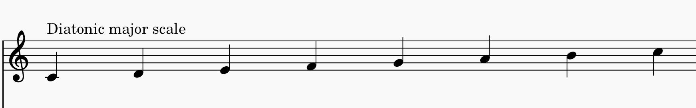
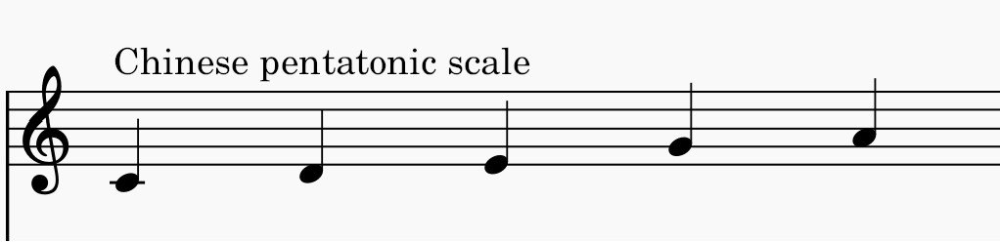
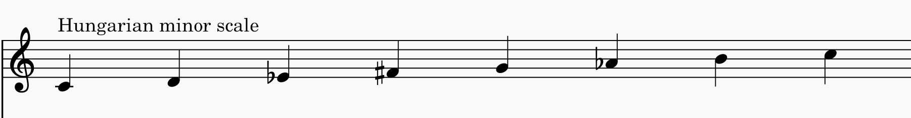

Implicit knowledge is knowledge that can't necessarily be articulated because you aren't aware that it's there. We
might gain this knowledge through implicit learning, just by existing essentially.
An example in music are different scales that are used in different cultures (scales form the world site). When living within a certain culture,
you are likely to listen to that culture's music. Their style and features might become implicit knowledge because you are not necessarily
trying to learn what the patterns of the scales are (unless you are a music theorist). These might be reflected in the type of music a composer writes.



Another example might be the fact that major chords usually represent happiness and minor chords represent sadness. We know this fact, but we
don't know why this is (and neuroscientists are still unsure why - it might be innate, or something we implicitly learnt from the environment).
Expertise
Experts are people who can solve and think about problems in a certain domain efficiently (Lecture 5). There are three key features that experts
have in common.
Meaningful and organized knowledge: experts possess a wide range of knowledge in their area of expertise (Lecture 5). Not only that, but they also are
able to form deep connections between these topics. They can see patterns with information they learn which helps with coming up with stategies
to solve problems. Expert composers probably have a toolkit of different composition techniques that they have learnt. ** connection to deep processing
Conditionalized knowledge: experts know under which circumstances to use their knowledge (Lecture 5). This makes them more efficient because they don't
need to search through their knowledge and apply all trategies they know. Perhaps expert composers will pick certain strategies when they want to
convey a specific idea. They likely won't try to use a series of major chords to convey a feeling of depression!
Automaticity: experts become more automatic thinking about certain things, which leaves them room in their working memory to deal with more
complex problems (Lecture 5). For instance, modern composers who use notation software to write music might become experts in that software so that they don't need to spend their
efforts trying to figure out how to add a piano pedal when they could be spending that time coming up with new ideas for a conclusion of their piece. This comes from lots
of repetition and dedication to learning. Or perhaps a composer wants to change from one key to another. I know there are
specific ways of modulating to a different key (that I do not know because I am not an expert), so an expert composer might know how to do so off the top of their head,
while a novice like myself will have to try different chord combinations until I find one that sounds good to get the effect I want.